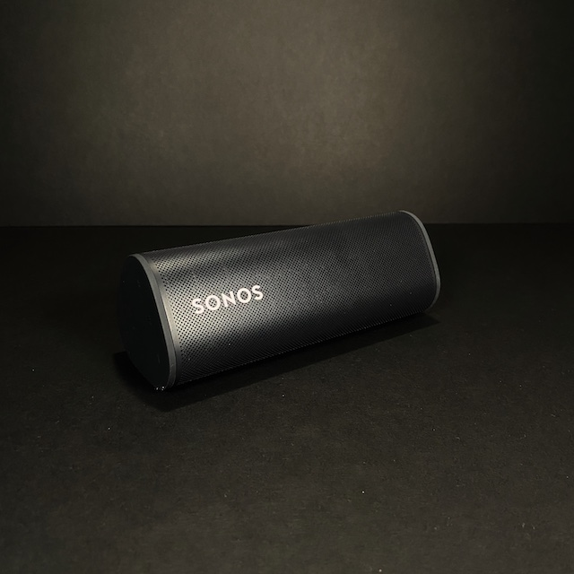
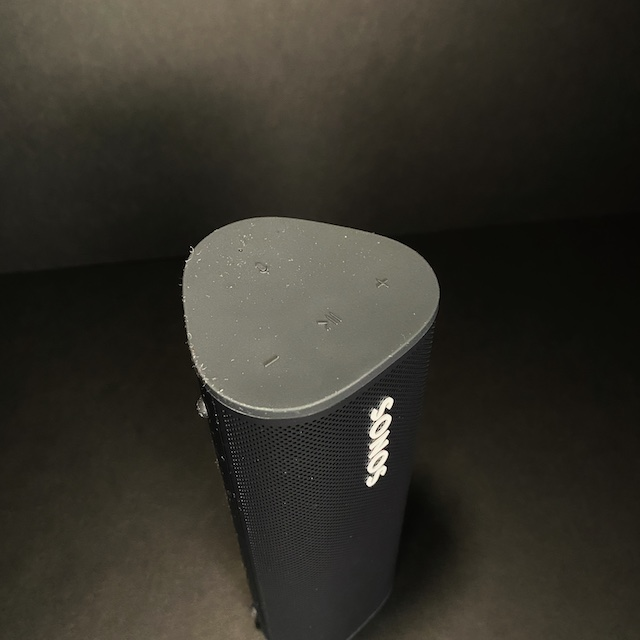
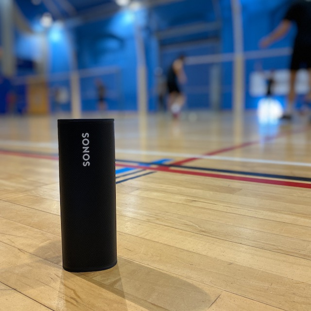
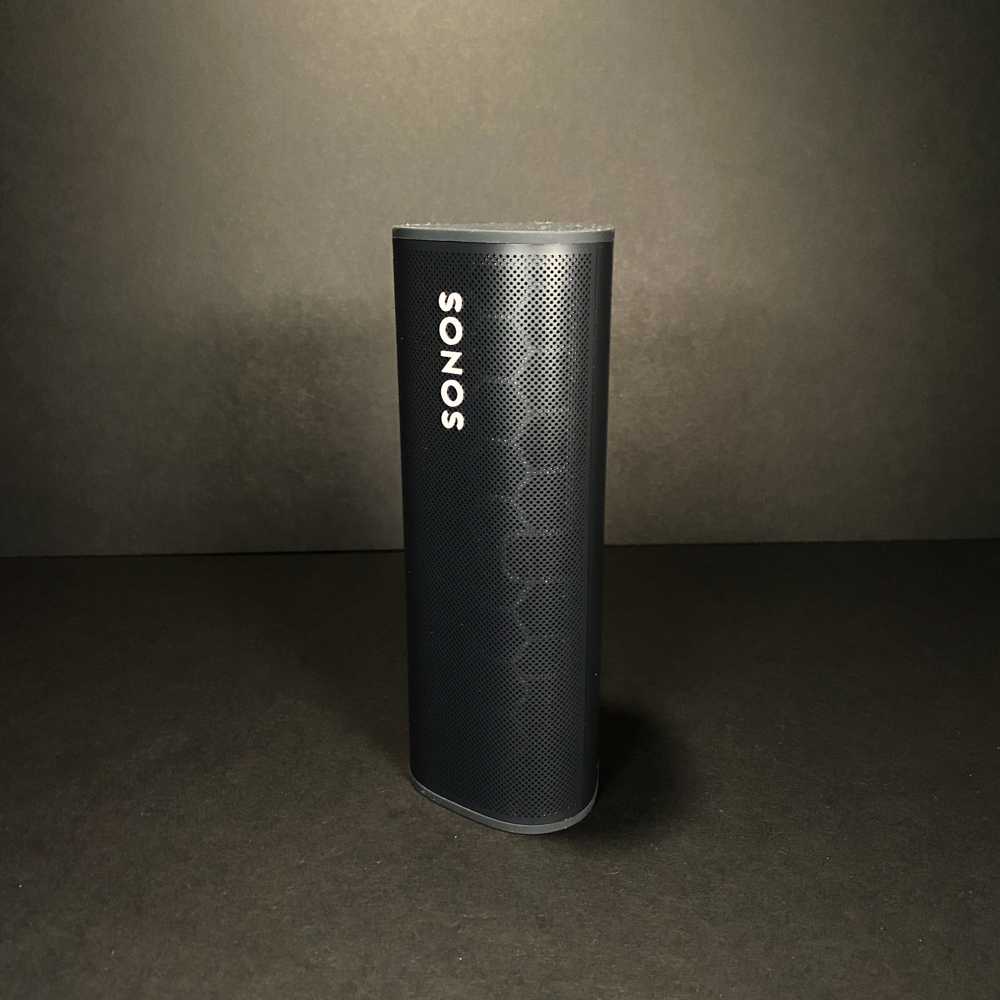

Sonos Roam Review
6/7/2021
Introduction
The Sonos Roam was released on the 20th April, it is Sonos’ 2nd battery powered speaker in a much smaller size. It’s priced at £159 at the time of writing this, which is their cheapest portable speaker into the brand’s extensive ecosystem. Following the success of the much bigger speaker, the Move, the speaker includes both Bluetooth and WiFi connectivity which means it can work as a standard portable Bluetooth speaker and whilst connected to WiFi, it works as a part of the brands popular multi-room Sonos system.
What’s in the Box?
Inside the box was the Sonos Roam wrapped in a soft felt with a sticker saying Roam on it. Included was a USB-A to USB-C cable, the USB-C has a right angle connector so to help the charger.
There were also some paper work. Sadly no 3 pin charger was supplied in the box.
Supported devices
For the smart functions, the speaker currently only supports 2 of the main assistants, which are Google Assistant and Alexa. But further support can be added in future software updates.
The device supports Apple AirPlay 2 and Spotify Connect which makes connecting to this speaker with more flexibility.
As a standard Bluetooth device, this support Bluetooth 5.0 which is twice as fast as 4.2 at connecting and has 4 times the range of its predecessor!
This device also works as a stereo pair if you have 2 Roams, however this doesn’t work as with only Bluetooth connectivity and unfortunately at the time writing this, you cannot use 2 Roams to be a pair of rear channels for your home cinema system.
The Roam will work flawlessly both indoors and outdoors when transferring with the new Automatic Switching feature which makes this transition seamless. The speaker will connect automatically with Wi-Fi when it is in range, and it will pair with your mobile phone through Bluetooth when you’re outdoors with it.
Design
The speaker is a long and thin triangle design which resembles a toberone-ish shape with a rubber top and bottom weighing in at 0.95lbs/0.43kg. There is also 4 rubber dots on one of the side of the speaker where it can lay flat on the side instead of standing upright.
On the front of the speaker is an embossed Sonos logo in white which is reversible. Above the logo, there is an LED that indicates the speaker’s connection status, while an LED on the bottom end indicates battery life. The top LED will show different colours depending on which state the speaker is in.
On the top of the speaker, it has 4 tactile buttons. These are play/pause with the ability to skip with a double-tap and go back a previous song with a triple-tap, 2 buttons to turn the volume up and down, and a button to mute the microphone. Muting the microphone means the Sonos’ Auto Trueplay EQ stops working as well.
The design of the speaker keeps the minimalist look that the Sonos range has, however with more of a focus of durability and ruggedness compared to the standard wired range such as the Sonos One. This is Sonos’ first speaker that supports wireless charging which nearly all previous competitors are lacking in.
The speaker has 3 modes which can be accessed through the power button, a quick press will make it go into sleep mode. 2 seconds will change it into Bluetooth mode, and holding it for around 5 seconds will turn the device full off. However once you start charging it, the device will turn on.
This small speaker is also IP67 water and dust rated, certification standards, that means it should survive up to 30 minutes in 3 feet of water. In practical terms, it means you can use the Roam in the bathroom while you shower and near pools without fretting about damage. Which is perfect for taking this speaker outdoors to parks or even the garden. THE SPEAKER DOES NOT FLOAT!
The speaker comes in a shadow black or lunar white. It is not a 360-degree speaker so do not expect a full room experience.
Audio
It’s a phenomenal speaker. In fact, for its size, it’s probably the best speaker I’ve ever listened to, delivering all types of music with poise and balance. It won’t match the bigger Sonos Move, but they serve different purposes.
With is compact size, it simply doesn’t have the thumping bass, and while it is certainly loud enough for personal listening or in small groups – in a relatively large room anything louder than 50% while in the corner is more than enough. Let’s be fair, it isn’t up to smashing out the beats for a large outdoor party. If you wanted a portable speaker, the Move would be a perfect fit. The separate mid and tweeter speakers give a real vibrancy and depth to music which makes the mids and highs still clear, with the right about of bass when listened indoors.
It uses Sonos’ Auto TruePlay feature first introduced with the Sonos Move has been upgraded here, so the Roam will automatically tune its soundstage to your environment, whether you’re on Bluetooth or Wi-Fi. It adjusts for orientation, environment and obstacles using the microphone on the top. You can also adjust the treble, bass and “loudness” in the Sonos app and create stereo pairs with two Roams while on Wi-Fi, but sadly not Bluetooth.
Use cases
We had a few small gatherings in the dining room where the Sonos Roam was the main speaker for the event, the Roam was connected via Wi-Fi and we used an iPad to control the music. As the software for the device is excellent, with support for every wireless streaming service. This method allowed users to freely change the music to different genres and artists through the tablet without the need of 1 person being in charge of the music. We can also queue music on the end which made it simple and able to enjoy the event without the need of constantly changing tracks.
If you play to use this in the garden or the park you’ll probably want to use Bluetooth, and setting this up is fairly simply. Just hold down the rear power button at the rear of the speaker for a couple of seconds, pair with your phone in the usual way and you’re good to go. Once paired for the first time, you’ll see the from LED light now becomes blue and every time you want to use the Bluetooth method, simply hold the rear button for 2 seconds and it will pair to you phone immediately.
Issues
We had an issue with the first Sonos Roam, where we had around 20 hours of use and the speaker didn’t respond. It wouldn’t show on the app or work as a standard Bluetooth speaker. We managed to get a replacement model and everything seems fine. It could be a faulty model.
It doesn’t come with a 3 pin charger in the box, sadly the 5W charger supplied with the your older phones doesn’t supply enough power to charge and run the speaker. You can purchase Sonos’ official wireless charging base with a ridiculous £44 price tag which neatly aligns the charger to the base. However using any Qi wireless charger would work fine for a fraction of the cost.
There is no 3.5mm jack for analogue input, which can be useful in party situations with multiple peoples’ phones however many newer phones don’t have this already.
The combined power/Bluetooth pairing button on the rear feels very soft and doesn’t have any feedback on the button, which makes it tricky to know when you’ve pressed it. It would also be better if it came with a separate Bluetooth button, which would make switching between Wi-Fi and Bluetooth a lot easier and not rely on audio cues. Switching is easy, but you have to hold the button in for a few seconds, and if you hold it too long, the speaker turns off.
When it comes to battery life, the speaker is advertised for an estimate of 10 hours. This is reduced further more as the speaker usually goes into sleep where the battery is drained throughout the day with no use. To preserve battery life, the device as to be fully switched off but we assume a future software update can solve this issue. Upon actually turning off the device, the unit does hold charge for a few days.
If you use the Google assistant for this speaker, you’ll find you can’t group your existing Google Home products to play the same music. This product can only be grouped with existing products in its ecosystem.
Conclusion
In conclusion, It’s very small and neat to be called truly portable, it’s weatherproof too which makes it great for outdoors use! It also sounds almost impossibly good for such a tiny thing, with a very premium price tag of £159 in the UK and more than double the price of a decent Bluetooth speaker like the Soundcore range from Anker.
Although the speaker isn’t cheap against its competitors, there is little to no competition when it comes to having so much features in a small package. With its multi-room speaker system with works flawlessly with this speaker and ability to work indoors and outdoors so great, we would recommend it as its a small, personal speaker that packs a punch!